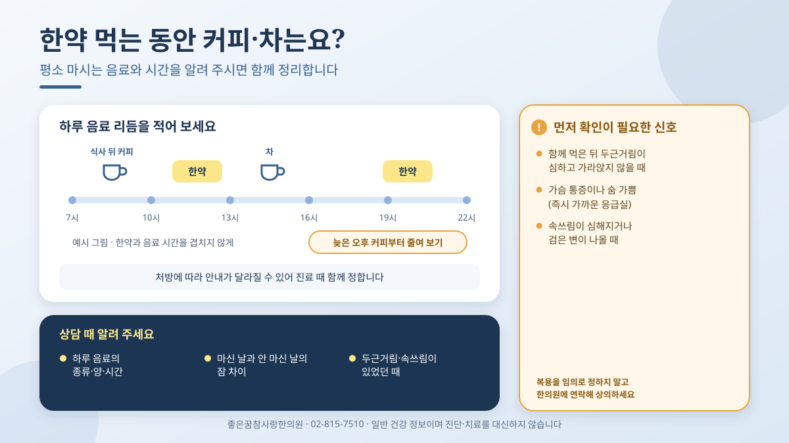

이종호 한의사 감수좋은꿈참사랑한의원 대표원장 (한의사 면허번호 19769)발행 2026-11-23 · 수정 2026-11-25
이 글의 차례
한약을 먹는 동안 커피나 차를 꼭 끊어야 하는 것은 아니지만, 처방과 몸 상태에 따라 안내가 달라지므로 평소 마시는 양과 시간을 알려 주시고 그 안내를 따르시면 됩니다. 일반적으로는 한약과 커피를 같은 시간에 마시기보다 시간을 띄우도록 권하는 경우가 많습니다. 카페인에 예민해 잠이나 속이 흔들리는 분이라면 이번 기회에 양을 함께 조정해 볼 수 있습니다.
왜 안내가 달라질까요
- 카페인은 사람에 따라 두근거림, 속쓰림, 잠을 얕게 하는 반응을 줄 수 있습니다.
- 빈속에 커피를 마시면 속이 불편한 분은 한약 복용 시간과 겹칠 때 불편이 커질 수 있습니다.
- 녹차, 보리차, 허브차처럼 차의 종류마다 카페인과 성분이 다릅니다.
- 처방의 목적에 따라 음료에 대한 안내가 달라질 수 있습니다.
- 에너지 음료나 진한 콜드브루처럼 한 잔에 든 카페인이 많은 음료는 잔 수만으로 양을 가늠하기 어렵습니다.
먼저 이렇게 여쭙니다
- 하루에 마시는 커피, 차, 에너지 음료의 종류와 잔 수는 어떤가요?
- 주로 몇 시에 마시고, 몇 시에 잠드나요?
- 카페인을 마신 뒤 가슴이 두근거리거나 속이 쓰린 적이 있나요?
- 빈속에 커피를 마시는 편인가요?
- 커피를 마시지 않은 날 두통이나 심한 졸음이 오나요?
일상에서 먼저 해 볼 수 있는 것
- 한약을 먹기 전에 평소 마시는 음료를 메모해 두기
- 한약 먹는 시간과 음료 마시는 시간을 겹치지 않게 정리해 보기
- 오후 늦게 마시는 커피부터 줄여 잠의 변화를 살펴보기
- 빈속 커피 대신 식사 뒤에 마시기
- 갑자기 모두 끊기보다 하루 한 잔씩 줄이거나 연하게 마시기
- 물을 함께 챙겨 마셔 커피로 갈증을 채우지 않기
예를 들면 이런 경우입니다
- 예를 들어 출근 직후 빈속에 아메리카노를 마시고 아침 식후에 한약을 먹는 직장인이라면, 커피를 아침 식사 뒤로 옮기고 한약과는 시간을 띄우는 식으로 하루 순서를 다시 짜 볼 수 있습니다.
- 예를 들어 시험을 앞두고 오후와 밤에도 커피와 에너지 음료로 버티는 수험생이 잠을 살피는 한약을 먹는다면, 오후 늦은 잔부터 줄이는 것을 먼저 이야기하고 공부 시간표와 함께 현실적인 범위를 정합니다.
- 예를 들어 녹차나 홍차를 물처럼 하루 종일 마시는 어르신이라면, 커피를 안 마셔도 카페인을 드시는 셈이라 차의 종류와 잔 수를 함께 여쭙고 저녁에는 보리차처럼 카페인이 없는 차로 바꾸는 방법을 함께 살핍니다.
한의원에서 함께 살필 수 있는 경우
- 카페인을 마시면 잠이 얕아진다고 느낄 때 하루 음료 리듬을 함께 여쭙니다.
- 빈속에 커피를 마시면 속이 불편할 때 식사와 한약 복용 시간을 함께 정리합니다.
- 피곤해서 커피에 기대는 날이 많을 때 잠과 생활 리듬을 함께 살핍니다.
좋은꿈참사랑한의원에서는 한약을 처방할 때 평소 음료 습관을 함께 여쭙고, 복용 시간과 함께 커피·차를 어떻게 하면 좋을지 안내합니다. 다음 진료에서 잠과 속의 변화를 이어서 확인합니다.
자주 하는 오해
- 한약을 먹으면 커피를 하루아침에 아예 끊어야 한다고 걱정하는 분이 많지만, 처방과 생활에 맞춰 양과 시간을 정하는 경우가 대부분이니 미리 겁먹지 않으셔도 됩니다.
- 차는 몸에 좋으니 얼마든지 마셔도 된다고 여기기 쉽지만, 녹차·홍차·마테차처럼 카페인이 든 차도 있어 종류를 알려 주시는 것이 좋습니다.
- 한약과 커피를 섞어 마시면 맛이 덜 쓰다며 함께 드시는 분도 있는데, 한약은 따로 드시고 음료는 시간을 띄우시기를 권합니다.
- 커피를 줄였더니 머리가 아프다는 것을 한약 때문이라고 여기는 경우도 있어, 줄이기 시작한 날을 적어 두시면 원인을 가늠하기 쉽습니다.
스스로 점검해 보세요
- 하루에 마시는 커피가 세 잔 이상이다
- 오후 3시 이후에도 커피나 카페인 음료를 마신다
- 아침에 빈속으로 커피를 마신다
- 커피를 마신 날 잠들기까지 오래 걸리거나 자다 자주 깬다
- 커피를 걸렀더니 두통이나 심한 나른함이 왔다
- 녹차, 홍차, 에너지 음료도 자주 마신다
- 한약 먹는 시간과 커피 마시는 시간이 거의 붙어 있다
두세 개 이상 해당한다면 한약 상담 때 하루 음료 순서를 함께 정리해 보세요. 해당하는 것이 하나도 없더라도 평소 즐겨 마시는 음료는 짧게 알려 주시면 안내가 더 구체적이 됩니다.
이렇게 기록해 오시면 상담이 쉬워집니다
- 하루 동안 마신 음료의 종류, 양, 시간
- 카페인을 마신 날과 마시지 않은 날의 잠 차이
- 두근거림이나 속쓰림이 있었던 때
- 복용 중인 약과 영양제
- 커피를 줄이기 시작한 날과 그 뒤 두통·나른함이 있었는지
- 한약을 먹은 시각과 커피를 마신 시각을 하루 단위로 나란히 적은 표
일주일 정도만 적어도 하루 흐름이 한눈에 보여, 어느 잔부터 줄이면 좋을지 함께 정하기 쉬워집니다.
이런 증상은 먼저 확인이 필요합니다
- 한약과 카페인을 함께 먹은 뒤 두근거림이 심하고 가라앉지 않는 경우
- 가슴 통증이나 숨 가쁨이 함께 있는 경우(즉시 응급실)
- 속쓰림이 심해지거나 검은 변이 나오는 경우
한약을 먹다가 두근거림이나 속 불편이 심해지면 복용을 임의로 정하지 말고 한의원에 연락해 상의하세요. 복용 중인 다른 약은 처방한 의사와 상의 없이 줄이거나 끊지 않습니다.
얼마나 지켜보고, 언제 확인하면 좋을까요
- 커피를 줄이기 시작한 첫 며칠은 두통이나 나른함이 올 수 있습니다. 가벼운 정도라면 사나흘 정도 물을 충분히 드시며 지켜보세요.
- 오후 커피를 줄인 뒤 1~2주 동안 잠드는 시간과 깨는 횟수를 적어 보시면, 다음 진료에서 카페인의 영향을 가늠하는 데 도움이 됩니다.
- 한약을 먹기 시작한 뒤 평소보다 두근거림이나 속쓰림이 사흘 넘게 이어지면 다음 진료를 기다리지 말고 전화(02-815-7510)로 알려 주세요.
- 가슴 통증, 숨 가쁨, 식은땀이 함께 오면 기다리지 말고 바로 응급실을 이용하세요.
처음 오시면 이렇게 진행합니다
첫 방문에는 접수 때 기본 정보를 적고, 진료실에서 불편한 곳과 함께 잠, 식사, 하루에 마시는 음료를 여쭙니다. 이어서 진맥을 하고, 필요하다고 판단될 때 설진·복진을 더합니다. 한약을 정하게 되면 하루 복용 시간을 함께 정하고, 그 시간표에 맞춰 커피와 차를 언제 마시면 좋을지 안내합니다.
이후 진료에서는 잔 수와 잠, 속의 변화를 이어서 확인하고 필요하면 안내를 조정합니다.
관련 글
- 카페인은 몇 시까지 마셔도 잠에 지장이 없을까요?
- 한약은 식전과 식후 중 언제 먹는지, 일반적으로 어떻게 안내하나요?
- 아침에 빈속에 커피를 마시면 속이 쓰릴 때는 어떻게 하나요?

여쭙는 것
- 하루에 마시는 커피, 차, 에너지 음료의 종류와 잔 수는 어떤가요?
- 주로 몇 시에 마시고, 몇 시에 잠드나요?
- 카페인을 마신 뒤 가슴이 두근거리거나 속이 쓰린 적이 있나요?
생활에서 해 볼 것
- 한약을 먹기 전에 평소 마시는 음료를 메모해 두기
- 한약 먹는 시간과 음료 마시는 시간을 겹치지 않게 정리해 보기
- 오후 늦게 마시는 커피부터 줄여 잠의 변화를 살펴보기
한의원에서 함께 살필 것
- 카페인을 마시면 잠이 얕아진다고 느낄 때 하루 음료 리듬을 함께 여쭙니다.
- 빈속에 커피를 마시면 속이 불편할 때 식사와 한약 복용 시간을 함께 정리합니다.
- 피곤해서 커피에 기대는 날이 많을 때 잠과 생활 리듬을 함께 살핍니다.
먼저 확인이 필요한 신호
- 한약과 카페인을 함께 먹은 뒤 두근거림이 심하고 가라앉지 않는 경우
- 가슴 통증이나 숨 가쁨이 함께 있는 경우(즉시 응급실)
- 속쓰림이 심해지거나 검은 변이 나오는 경우
한눈에 보는 표
| 구분 | 핵심 |
|---|---|
| 여쭙는 것 | 하루에 마시는 커피, 차, 에너지 음료의 종류와 잔 수는 어떤가요? 주로 몇 시에 마시고, 몇 시에 잠드나요? |
| 생활에서 해 볼 것 | 한약을 먹기 전에 평소 마시는 음료를 메모해 두기 한약 먹는 시간과 음료 마시는 시간을 겹치지 않게 정리해 보기 |
| 한의원에서 함께 살필 것 | 카페인을 마시면 잠이 얕아진다고 느낄 때 하루 음료 리듬을 함께 여쭙니다. 빈속에 커피를 마시면 속이 불편할 때 식사와 한약 복용 시간을 함께 정리합니다. |
| 먼저 확인이 필요한 신호 | 한약과 카페인을 함께 먹은 뒤 두근거림이 심하고 가라앉지 않는 경우 가슴 통증이나 숨 가쁨이 함께 있는 경우(즉시 응급실) |
자주 묻는 질문
커피를 한 잔도 안 마셔야 하나요?
일률적인 규칙은 없고 처방과 개인의 상태에 따라 안내가 달라집니다. 평소 마시는 양을 말씀해 주시면 그에 맞춰 안내합니다.
한약과 커피를 같은 시간에 마셔도 되나요?
보통은 시간을 띄우도록 안내하는 경우가 많습니다. 처방별로 다를 수 있으니 받을 때 직접 확인해 주세요.
보리차나 녹차는 괜찮은가요?
차의 종류에 따라 카페인이나 성분이 다릅니다. 드시는 차의 종류를 알려 주세요.
디카페인 커피는 괜찮은가요?
카페인은 적지만 아주 없지는 않습니다. 드시는 양과 시간을 알려 주시면 처방에 맞춰 안내합니다.
좋은꿈참사랑한의원은 재진 때 지난번 이야기부터 이어서 여쭙니다. 진료시간과 예약은 오시는 길에서 확인하세요.
어디서 상담받을 수 있나요?
좋은꿈참사랑한의원은 서울 동작구 만양로2길 2 신성빌딩 3층·5층(서울 동작구 상도동, 7호선 상도역 3번 출구 근처)에 있습니다. 한의사 3명(이종호 대표원장, 조영기 수석진료원장, 정원영 진료원장)이 진료합니다. 진료시간은 평일 09:30~20:00(점심 13:00~14:00), 토·일·공휴일 09:30~15:00이며, 방문 전 전화로 확인을 권합니다. 예약은 네이버 예약, 카카오톡 상담, 전화 02-815-7510로 받습니다.
이 글은 일반적인 건강 정보이며 개인의 진단이나 치료를 대신하지 않습니다. 증상이 있거나 복용 중인 약이 있다면 진료를 통해 확인하세요. 치료 효과는 개인마다 다를 수 있습니다.
작성 기준: 일반적으로 알려져 있는 건강 정보를 참고해 정리했습니다(대표원장 감수). 증상 기록은 1~2주 동안 하루 1회, 비슷한 시간에 적어 오시면 지난 상태와 비교하기 쉽습니다.